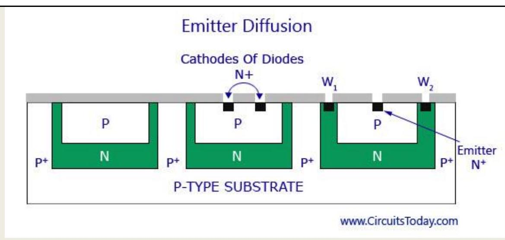

CHAPTER -2 . INTEGRATED CIRCUITS :
2.1 Define the term IC and its uses &State the different types of ICs.
An integrated circuit or monolithic integrated circuit (also referred to as an IC, a chip, or a microchip) is a set of electronic circuits on one small plate ("chip") of semiconductor material, normally silicon. This can be made much smaller than a discrete circuit made from independent components. ICs can be made very compact, having up to several billion transistors and other electronic components in an area the size of a fingernail.

Need of Integrated Circuits.
The operations today performed by IC's were earlier performed by using vacuum tubes. Vacuum tubes consisted of electrodes inside a glass tube filled with vacuum. They were slower in operation, expensive and bigger in size. In order to make technical advancements it was necessary to increase the number of components which in turn would increase the cost and size. Also, previously all the components were individually connected whereas today different components in an IC are printed as a single unit using photolithography. Very thin paths of metal like copper and aluminum are laid directly on the same piece of material. These thin paths function like wires and electrically integrate all the different components of the integrated circuit.
Types of Integrated Circuits.
There are mainly two types of IC s available.
-
Digital Integrated Circuits:
Digital IC's are the one's which work only on two defined levels 1's and 0's. They work on binary mathematics. They can contain millions of logic gates, flip-flops etc integrated on a single chip. Microprocessors and microcontrollers are examples of digital IC's -
Analog Integrated Circuits:
Sensors, OP-AMP's are analog IC's. They work by processing continuous signals. They perform functions such as filtering, amplification, modulation, demodulation etc.
To know the basics a sample circuit must be considered to be converted to its monolithic form. With basic components like resistor, diode, and transistor a basic circuit is first made.
Basic Monolithic IC Circuit:
With the basic circuit, the different layers for the monolithic IC are then considered. The basic structure of a monolithic IC will have 4 layers of different materials. The base layer will be a P-type silicon layer and is named as the substrate layer. This layer will have a typical thickness of 200 micrometer. Silicon is the preferred semiconductor for the P-type and N-type layer because of its favourable characteristics for the manufacturing of an IC.
The layer above the substrate P-type silicon layer is the N-type layer. All the active and passive components required for the circuit are fabricated onto this layer. This layer has a typical thickness of 25 micrometer. The N -type silicon material is grown as a single crystal extension of the P -layer and the components are required are fabricated using series of P-type and N-type impurity diffusions. The N-type layer becomes the collector for the transistor or an element for a diode or a capacitor.
Basic Monolithic IC : The layer above N-type is made of silicon dioxide (SiO2) material. Since there is a selective Ptype and N-type impurity diffusion going on in the second layer, this layer acts as a barrier in the process. This layer is etched away from the region where diffusion is desired to be permitted with photolithographic process. The rest of the wafer remains protected against diffusion. This layer also protects the silicon layer from contamination.
The up-most layer is that made of aluminium. This metallic layer is used to provide interconnections between the different components used in the IC. .
IC Fabrication Overview
2 Describe the fabrication of monolithic IC( Epitaxial Growth, Masking and Etching. Diffusion of Impurities etc)
2.2 Describe the fabrication of monolithic IC - Component Fabrication and 2.3 Discuss, the fabrication of monolithic resistors, capacitors, diodes & bipolar junction transistors, Integrated field Effect Transistors.
Fabrication of a Transistor (Initial Example)
Fabrication process of a transistor is shown in the figure below. A P-type substrate is first grown and then the collector, emitter, and base regions are diffused on top of it as shown in the figure. The surface terminals for these regions are also provided for connection.
Monoilithic IC - Transistor Fabrication:
Both transistors and diodes are fabricated by using the epitaxial planar diffusion process that is explained earlier. In case of discrete transistors, the P-type substrate is considered as the collector. `But this is not possible in monolithic IC's, as all the transistors connected on one P-type substrate would have their collectors connected together. This is why separate collector regions are diffused into the substrate.
Diodes (Initial Example)
They are also fabricated by the same diffusion process as transistors are. The only difference is that only two of the regions are used to form one P-N junction. In figure, collector-base junction of the transistor is used as a diode. Anode of the diode is formed during the base diffusion of the transistor and the collector region of the transistor becomes the cathode of the diode. For high speed switching emitter base junction is used as a diode.
Resistors (Initial Example)
The resistors used in IC's are given their respective ohmic value by varying the concentration of doping impurity and depth of diffusion. The range of resistor values that may be produced by the diffusion process varies from ohms to hundreds of kilohms.
Monolithic IC's
We have already discussed the basics of Integrated Circuits in our previous post. The concepts of a basic monolithic IC will be discussed here.
To know the basics a sample circuit must be considered to be converted to its monolithic form. With basic components like resistor, diode, and transistor a basic circuit is first made.
Basic Monolithic IC Circuit
www.CircuitsToday.com
Basic Monolithic IC Circuit
Basic Monolithic IC Circuit: With the basic circuit, the different layers for the monolithic IC are then considered. The basic structure of a monolithic IC will have 4 layers of different materials. The base layer will be a P-type silicon layer and is named as the substrate layer. This layer will have a typical thickness of 200 micrometer. Silicon is the preferred semiconductor for the P-type and N-type layer because of its favourable characteristics for the manufacturing of an IC.
The layer above the substrate P-type silicon layer is the N-type layer. All the active and passive components required for the circuit are fabricated onto this layer. This layer has a typical thickness of 25 micrometer. The N -type silicon material is grown as a single crystal extension of the P-layer and the components are required are fabricated using series of P-type and N-type impurity diffusions. The N-type layer becomes the collector for the transistor or an element for a diode or a capacitor.
Basic Monolithic IC
The layer above N-type is made of silicon dioxide (SiO2) material. Since there is a selective P-type and N-type impurity diffusion going on in the second layer, this layer acts as a barrier in the process. This layer is etched away from the region where diffusion is desired to be permitted with photolithographic process. The rest of the wafer remains protected against diffusion. This layer also protects the silicon layer from contamination.
The up-most layer is that made of aluminium. This metallic layer is used to provide interconnections between the different components used in the IC.
Monolithic IC Manufacturing Process;
For the manufacture and production of the monolithic IC, all circuit components and their interconnections are to be formed in a single thin wafer. The different processes carried out for achieving this are explained below.
i. P-layer Substrate Manufacture
Being the base layer of the IC, the P-type is silicon is first built for the IC. A silicon crystal of P-type is grown in dimensions of 250 mm length and 25 mm diameter. The silicon is then cut into thin slices with high precision using a diamond saw. Each wafer will precisely have a thickness of 200 micrometer and a diameter of 25 mm . These thin slices are termed wafers. These wafers may be circular or rectangular in shape with respect to the shape of the IC. After cutting hundreds of them each wafer is polished and cleaned to form a P-type substrate layer.
ii. N-type Epitaxial Growth
The epitaxial groth process of a low resistive N-type over a high resistive P -type is to be carried out. This is done by placing the $n$-type layer on top of the P-type and heating then inside a diffusion furnace at very high temperature (nearly 1200C). After heating, a gas mixture f Silicon atoms and pentavalent atoms are also passed over the layer.
This forms the epitaxial layer on the substrate. All the components required for the circuit are built on top of this layer. The layer is then cooled down, polished and cleaned.
iii. The Silicon Dioxide Insulation Layer
As explained above, this layer is required contamination of the N -layer epitaxy. This layer is only 1 micrometer thin and is grown by exposing the epitaxial layer to oxygen atmosphere at 1000C. A detailed image showing the P-type, N -type epitaxial layer and SiO2 layer is given below.
Monolithic IC-Substrates and Layers
iv. Photolithographic Process for SiO2:
To diffuse the impurities with the N-type epitaxial region, the silicon dioxide layer has to be etched in selected areas. Thus openings must be brought at these areas through photolithographic process. In this process, the SiO2 layer is coated with a thin layer of a photosensitive material called photoresist. A large black and white pattern is made in the desired patter, where the black pattern represents the area of opening and white represents the area that is left idle. This pattern is reduced in size and fit to the layer, above the photoresist. The whole layer is then exposed to ultraviolet light. Due to the exposure, the photoresist right below the white pattern becomes polymerized. The pattern is then removed and the wafer is developed using a chemical like trichloroethylene. The chemical dissolves the unpolymerized portion of the photoresist film and leaves the surface. The oxide not covered by polymerised photoresist is then removed by immersing the chip in an etching solution of HCl . Those portions of the SiO2 which are protected by the photoresist remain unaffected by the acid. After the etching and diffusion process, with the help of chemical solvents like sulphuric acid, the resist mask is then removed by mechanical abrasion. The appropriate impurities are then diffused through oxide free windows.
Monolithic IC - Photolithographic-Process
v. Isolation Diffusion
After photolithographic process the remaining SiO2 layer serves as a mask for the diffusion of acceptor impurities. To get a proper time period for allowing a P-type impurity to penetrate into the N -type epitaxial layer, isolation diffusion is to be carried out. By this process, the P-type impurity will travel through the openings in SiO2 layer, and the N -type layer and thus reach the P -type substrate, Isolation junctions are used to isolate between various components of the IC. The temperature and time period of isolation diffusion should be carefully monitored and controlled. As a result of isolation diffusion, the formation of N-type region called Isolation Island occurs. Each isolated island is then chosen to grow each electrical component. From the figure below you can see that the isolation islands look like back-to-back P-N junctions. The main use if this is to allow electrical isolation between the different components inside the IC. Each electrical element is later on formed in a separate isolation island. The bottom of the N -type isolation island ultimately forms the collector of an N-P-N transistor. The P-type substrate is always kept negative with respect to the isolation islands and provided with reverse bias at $\mathrm{P}-\mathrm{N}$ junctions. The isolation will disappear if the P-N junctions are forward biased.
Monolithic IC - Isolation Diffusion:
Monolithic IC - Isolation Diffusion
An effect of capacitance is produced in the region where the two adjoining isolation islands are connected to the P-type substrate. This is basically a parasitic capacitance that will affect the performance of the IC. This kind of capacitance is divided into two. As shown in the figure C1 is one kind of capacitance that forms from the bottom of the N-type region to the substrate and capacitance C2 from the sidewalls of the isolation islands to the P-region. The bottom component C1 is essentially due to step junction formed by epitaxial growth and, therefore, varies as the square root of the voltage V between the isolation region and substrate. The sidewall capacitance C 2 is associated with a diffused graded junction and so varies as ( -1/2 ) exponential of V . The total capacitance is of the order of a few picoFarads.
vi. Base Diffusion:
The working of base diffusion process is shown in the figure below. This process is done to create a new layer of SiO2 over the wafer. P-regions are formed under regulated environments by diffusing P-type impurities like boron. This forms the base region of an N-P-N transistor or as well as resistors, the anode of diode, and junction capacitor. In this case, the diffusion time is so controlled that the P-type impurities do not reach the substrate. The resistivity of the base layer is usually much higher than that of the isolation regions.
Monolithic IC - Base Diffusion
The isolation regions will have a lot lesser resistivity than that of the base layer.
vii. Emitter Diffusion
Masking and etching process is again carried out to form a layer of silicon dioxide over the entire surface and opening of the P-type region. The transistor emitters, the cathode regions for diodes, and junction capacitors are grown by diffusion using N-type impurities like phosphorus through the windows created through the process under controlled environmental process. As shown in the figure below there are two additional windows: W1 and W2. These windows are made in the N -region to carry an aluminium metallization process.
Emitter Diffusion
viii. Aluminium Metallization
The windows made in the N -region after creating a silicon dioxide layer are then deposited with aluminium on the top surface. The same photoresist technique that was used in photolithographic process is also used here to etch away the unwanted aluminium areas. The structure then provides the connected strips to which the leads are attached. The process can be better understood by going through the figure below.
Aluminium Metalization
ix. Scribing and Mounting:
This is the final stage of the IC manufacturing process. After the metallization process, the silicon wafer is then scribed with a diamond tipped tool and separated into individual chips. Each chip is then mounted on a ceramic wafer and is attached to a suitable header. Next the package leads are connected to the IC chip by bonding of aluminium or gold wire from the terminal pad on the IC chip to the package lead. Thus the manufacturing process is complete. Thu, hundreds of IC's is manufactured simultaneously on a single silicon wafer.
Monolithic IC - Component Fabrication:
Now we shall discuss in detail how different circuit elements like capacitors, transistors, diodes, and resistors are fabricated into an IC. Please note that it is practically impossible to fabricate an inductor into an IC. It is thus added externally by connecting it to the corresponding IC pin as designed by the manufacturer.
Transistors:
The fabrication process of a transistor is shown in the figure below. A P-type substrate is first grown and then the collector, emitter, and base regions are diffused on top of it as shown in the figure. The surface terminals for these regions are also provided for connection.
Monoilithic IC - Transistor Fabrication
Both transistors and diodes are fabricated by using the epitaxial planar diffusion process that is explained earlier. In case of discrete transistors, the P-type substrate is considered as the collector. `But this is not possible in monolithic IC's, as all the transistors connected on one P-type substrate would have their collectors connected together. This is why separate collector regions are diffused into the substrate.
Even though separate collector regions are formed, they are not completely isolated from the substrate. For proper functioning of the circuit it is necessary that the P-type substrate is always kept negative with respect to the transistor collector. This is achieved by connecting the substrate to the most negative terminal of the circuit supply. The unwanted or parasitic junctions, even when reverse-biased, can still affect the circuit performance adversely. The junction reverse leakage current can cause a serious problem in circuits operating at very low current levels. The capacitance of the reverse-biased junction may affect the circuit high-frequency performance, and the junction break down voltage imposes limits on the usable level of supply voltage. All these adverse effects can be reduced to the minimum if highly resistive material is employed for the substrate. If the substrate is very lightly doped, it will behave almost as an insulator.
Diodes:
They are also fabricated by the same diffusion process as transistors are. The only difference is that only two of the regions are used to form one P-N junction. In figure, collector-base junction of the transistor is used as a diode. Anode of the diode is formed during the base diffusion of the transistor and the collector region of the transistor becomes the cathode of the diode. For high speed switching emitter base junction is used as a diode.
Monolithic IC - Diode Fabrication
Resistors:
The resistors used in IC's are given their respective ohmic value by varying the concentration of doping impurity and depth of diffusion. The range of resistor values that may be produced by the diffusion process varies from ohms to hundreds of kilohms. The typical tolerance, however, may be no better than $\pm 5 \%$, and may even be as high as $\pm 20 \%$. On the other hand, if all the resistors are diffused at the same time, then the tolerance ratio may be good. Most resistors are formed during the base diffusion of the integrated transistor, as shown in figure below. This is because it is the highest resistivity region. For low resistance values, emitter region is used as it has much lower resistivity.
Monolithic IC-Resistor Fabrication
Another diffusion technique is also used for the growth of IC resistors. It is basically a thin-film technique. In this process a metal film is deposited on a glass or SiO2 surface. The resistance value can be controlled by varying thickness, width and length of the film. Since diffused resistors can be processed while diffusing transistors. This technique is more economic and less time consuming and therefore, the most widely used.
Capacitors:
The figure below shows the P and N -regions forming the capacitor plates. The dielectric of the capacitor is the depletion region between them.

Monolithic IC - Diffused Capacitor Fabrication
2.4 Explain briefly the difference between digital & linear ICs.
| SI. No | Digital ICs. | Linear ICs. |
|---|---|---|
| 1. | Easy to design. | Discrete transistor networks like filters & amplifiers ,modulators that requires additional external components for operation. |
| 2 | Much more accurate & precise than analog ICs because this can be easily expanded to handle more digits by adding more switching circuits. | Linear ICs are quite complex & costly for accuracy & precision. |
| 3 | Fabrication is simpler & economical that of analog IC s because this does not requires high value of capacitors, inductors &transformers. | Fabrication of analog ICs cannot be integrated economically. |
| 4 | Less affected by Noise. | Effect of Noise is more. |
| 5. | Used in Computation & data processing, control system ,communications & measurements. | Used in Signal generators, Radio frequency transmitters & receiver electric motors. |